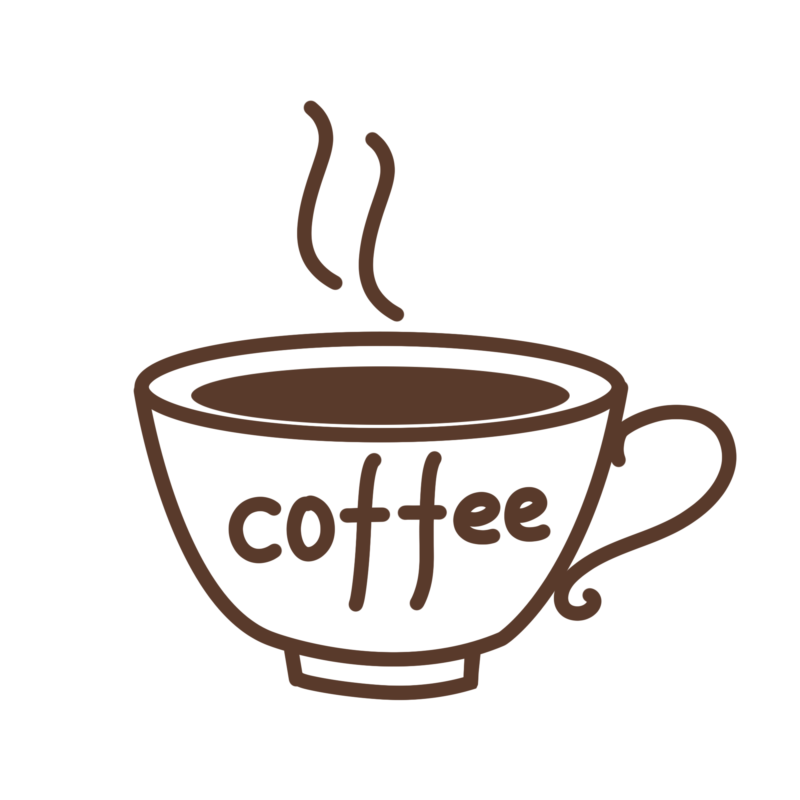
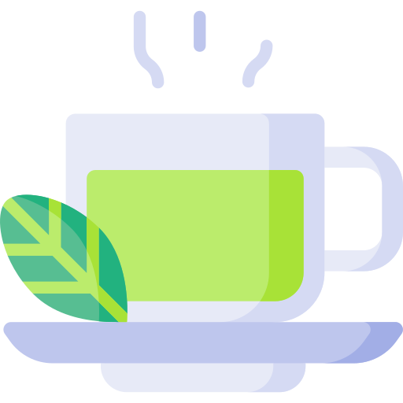

Кофеї́н — ксантиновий алкалоїд, міститься в бобах кавового дерева, у листі чаю, мате,
ягодах гуарани, а також у невеликих кількостях у какао та горіхах кола; стимулятор центральної
нервової системи, компонент тонізуючих напоїв та лікарських засобів для полегшення дихання.
У рослинах кофеїн відіграє роль природного пестициду, який паралізує та вбиває комах та паразитів.
Кофеїн — безбарвна з гірким смаком кристалічна речовина, за структурною будовою
гетероциклічний алкалоїд пуринового ряду. Вперше добутий з кавового екстракту в 1821 році.
Джерела кофеїну
Кофеїн — алкалоїд рослинного походження, міститься в деяких рослинах, найвідоміші з
яких кавове дерево, чай, какао. Мате та гуарана як джерела кофеїну використовуються рідше, в
основному для приготування чаю і, останнім часом, енергетичних напоїв. Альтернативні назви
кофеїну — матеїн і гуаранін — походять від назв цих двох рослин відповідно.
Фармакологічні властивості кофеїну
Кофеїн є стимулятором центральної нервової системи (ЦНС). Дослідження свідчать, що
кофеїн підсилює процеси збудження в корі головного мозку, у відповідних дозах він підсилює
позитивні умовні рефлекси і підвищує рухову активність. Стимулююча дія підвищує розумову
та фізичну працездатність, зменшує втому та сонливість. Великі дози, щоправда, можуть
призводити до виснаження нервових клітин. У дозуванні кофеїну треба враховувати
індивідуальні особливості нервової системи. Кофеїн послаблює дію снодійних і наркотичних
речовин, підвищує рефлекторну збудливість спинного мозку.
Серцева діяльність під дією кофеїну посилюється, серцеві скорочення стають більш
інтенсивними та частішими. У колаптоїдних і шокових станах артеріальний тиск під дією
кофеїну підвищується, однак у разі нормального артеріального тиску суттєвих змін не
відбувається, оскільки водночас зі збудженням судинного центру і серця розширюються також
судини скелетних м'язів та інших органів тіла (мозку, серця, нирок) (щоправда судини органів
черевної порожнини звужуються).
Під дією кофеїну підсилюється секреторна діяльність шлунку.

Кава
Ка́ва — напій, що виготовляється зі смаженого насіння плодів — «бобів» кавового дерева.
Кава найбільше цінується через виражену збадьорливу дію, завдяки вмісту алкалоїдів кофеїну та
теоброміну. Кава культивується з давніх часів і займає важливе місце в кулінарних традиціях
багатьох культур світу.
За деякими оцінками, кавовий напій є другою за об'ємами споживання речовиною на Землі
після води (за іншими — другим після води є чай).
Способи приготування кави
Кава по-східному готується в так званій джезві (турці).
Часто використовуються спеції, такі, як кардамон, кориця і тому подібні
Кава-фільтр (американська, «Крапельниця») — більшість домашніх кавоварок
працюють за «гравітаційним» принципом: гаряча вода капає на лійку з фільтром, в якій
лежить мелена кава.
Френч-прес — спеціальна колба (зазвичай скляна або металевий термос), в якій поршень
з ситом відокремлює кавову гущу від напою.
У гейзері (кава по-неаполітанськи). Гейзер складається умовно з трьох частин: в одну
заливається вода, в іншу засипають мелену каву, а в третій через деякий час виявляється
готовий напій.
Копі бубук — індонезійський спосіб. Кава дуже дрібного помелу заливається у чашці
окропом. Копі бубук робиться дуже міцним та дуже солодким. В такий спосіб готують,
наприклад, «копі лювак».
Еспресо — отримують за допомогою спеціальної еспресо-машини, в якій через мелену
каву під тиском подається гаряча вода нагріта до температури 88-91 °C. На основі еспресо
зазвичай готується:
Кава з молоком.
Глясе (від фр. glacé — заморожений, застиглий) — кава з морозивом.
Капучино (італ. cappuccino) — кава з молоком і пишною піною («каптуром»).
Лате макіато (італ. latte macchiato) — незмішане капучино, де молоко (3/4
частини), молочна піна і кава (1/4 частини) лежать шарами.
Мока (італ. caffè mocha) — так зазвичай називають каву з додаванням шоколаду
або, іноді, кава по-східному. Мокко — основний сорт кави, особливістю якого є
шоколадний післясмак. В США цей вид кави зветься моккачино (Mochaccino).
Ристрето (італ. ristretto) — найбільш концентрована, міцна та підбадьорлива
кава, зварена в меншому, ніж еспресо, обсязі (7 г кави на 15-20 мл води).
Всупереч поширеній думці, рістретто містить не так вже й багато кофеїну.
Насправді в перші 15 секунд екстракції кави в рістретто потрапляють кавові
ефірні олії, що створюють насичений смак та аромат кави, а кофеїн починає
активно виділятися пізніше. Тому в порції рістретто вміст кофеїну навіть
нижчий, ніж в порції еспресо.
Фрапучино — (італ. frappuccino) — холодний кавовий напій, що продається в
світовій мережі кав'ярень Starbucks. Назва «фрапучино» зроблена шляхом
додавання слів «Фрапе» і «Капучино»

Чай
Чай — напій, що отримується заварюванням, варінням або настоюванням підготовленого
листа чайного куща. Чаєм також називається сухе листя чайного куща, призначене для
заварювання цього напою. У розширеному сенсі — будь-який листяний або трав'яний настій.
Найрозповсюдженішими та найвідомішими є чорний та зелений чаї.
Камбоджийський вважається або третім підвидом, або природним гібридом
китайського та асамського. Вирощується в деяких районах Індокитаю.
Японський вважається формою китайського підвиду, кущі якого були завезені в Японію монахами.
За окисненням:
Білий чай — проходить мінімальну кількість стадій обробки в процесі
виробництва. Зазвичай це — в'ялення і сушка. Не зважаючи на назву, білий чай
має вищу міру окиснення, ніж більшість зеленого чаю — до 12 %, тому і настій
він дає темніший, всупереч поширеній помилці. Приклади: Бай Хао Інь Чжень,
Бай Мудань.
Зелений чай — на початку обробки іноді фіксується парою температури 170-
180°С; окиснення продовжується не більше двох днів, після чого зазвичай
припиняється нагріванням (традиційно в горщиках, як прийнято в Китаї або під
парою, як прийнято в Японії), або взагалі не проводиться. В результаті чай стає окисненим на 3—12 %. Приклади: Бі Ло Чунь, Тай Пін Хоу Куй, Мао Фен,
Люань Гуа Пянь.
Жовтий чай — окиснюється на 3-12 %, майже як зелений, але перед сушкою
проходить процедуру закритого «томління».
Улун — чай, окиснений на 30-70 %. В Китаї називається «синьо-зеленим» або
«блакитним». Має кілька градацій за ступенем окиснення — від найслабшого до
найбільшого, який за властивостями є подібним до чорного чаю.
Чорний чай, або за китайською термінологією, червоний або багряний —
окиснюється майже повністю (на 80 %), термін окиснення — від двох тижнів до
місяця, хоча існують і скорочені процеси. Приклади чорного чаю: кімун,
юньнань, асам, дарджилінг, дяньхун.
Пуер, або за китайською термінологією, чорний — ферментований чай,
виготовляється із старого листя старих кущів. Після доведення до стану зеленого
чаю, ферментується в точному сенсі цього слова від кількох місяців до кількох
років. Пуер має два основних типи: Шу Пуер (готовий) і Шень Пуер (сирий).